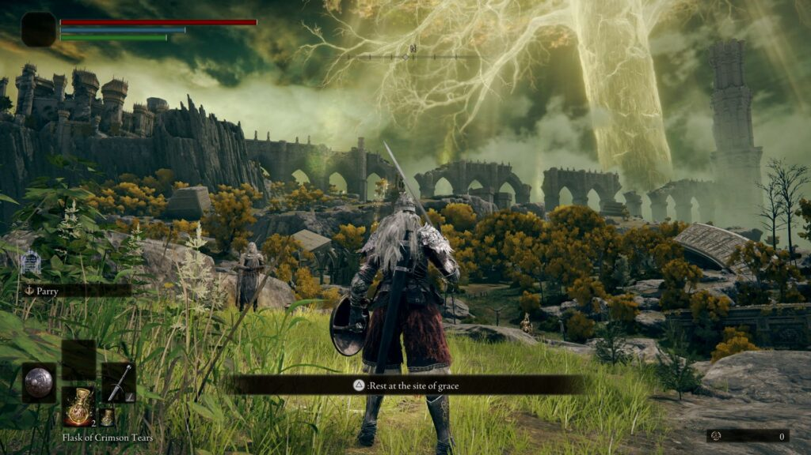
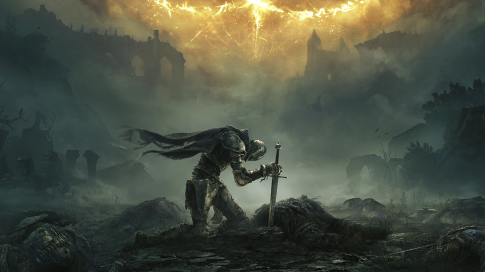

Оспівувачів робіт FromSoftware Elden Ring вразила в саме серце, і це відомо. Але що якщо на скакуна Торрента посадити незграбного мандрівника, якого ганебно вигнав кожен попередній souls-проект японців, надавши прискорення стусаном важкого сабатону? Розповідаємо про Elden Ring із позиції гравця, який не за стражданнями приходить до RPG.
- Розробник: FromSoftware
- Видавець:Bandai Namco
- Дата виходу: 25 лютого 2022 року
- Платформи:Windows, PlayStation 4, PlayStation 5, Xbox One и Xbox Series X/S
На момент написання огляду в Elden Ring награно сорок годин, вбито з десяток босів – від досить податливих до надзвичайно лютих, виформлено кілька сетів, скриня ломиться від великої кількості колючого, ріжучого і дроблення, робота FromSoftware не пройдено навіть наполовину. До гри я приєднався вже після релізу, тижня у запасі у мене не було, але вражень для розуміння та порівняння Elden Ring з іншими souls-проектами накопичилося вже дуже багато, від них і танцюватимемо.
Якщо проводити паралелі з іншими тайтлами FromSoftware, новинка справедливо здасться квінтесенцією ідей та кор-механік попередніх робіт студії, але з низкою нововведень, які на перший погляд можуть здатися не такими фундаментальними, але насправді докорінно перетворюють сприйняття гри.
Вірні собі розробники зберегли атмосферу темного фентезі, а співавтором запросили маестро жанру Джорджа Мартіна, завдяки чому розповідь стала більш зв’язковим і насиченим. Але не зваблюйтеся, щоб картинка склалася, сюжет як завжди доведеться збирати по крихтах, уважно вислуховуючи кожного охочого до розмов НВЦ. Це все ще «археологія», але знахідок буде більше, ніж будь-коли.